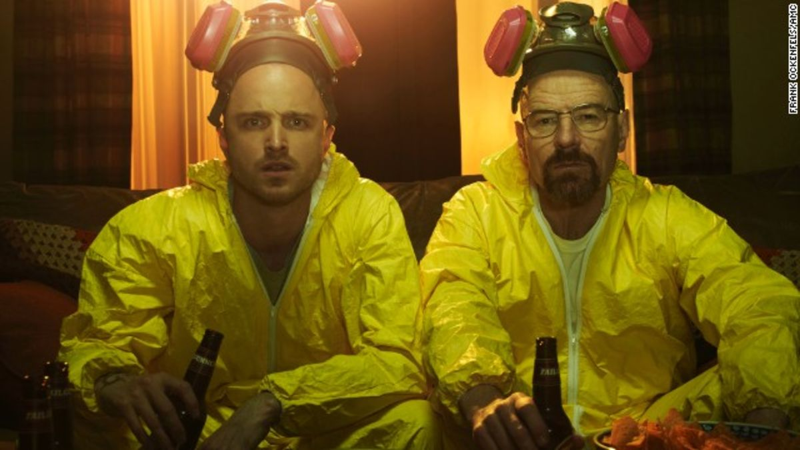

An image of Walt from the pilot episode

Walt and Jessie, partners in cooking meth
Walt and Jessie in their lab being supervised by Gus Fring, one of the drug lords they work for
Jessie and his girlfriend Jane
Saul Goodman, Walt's lawyer, is one of the principal characters of the show

Saul Goodman was so loved as a character that he got his own show

Breaking Bad is set in New Mexico, and features some beautiful scenery

Los Pollos Hermanos, a chain restaurant used as a front by Gus Fring